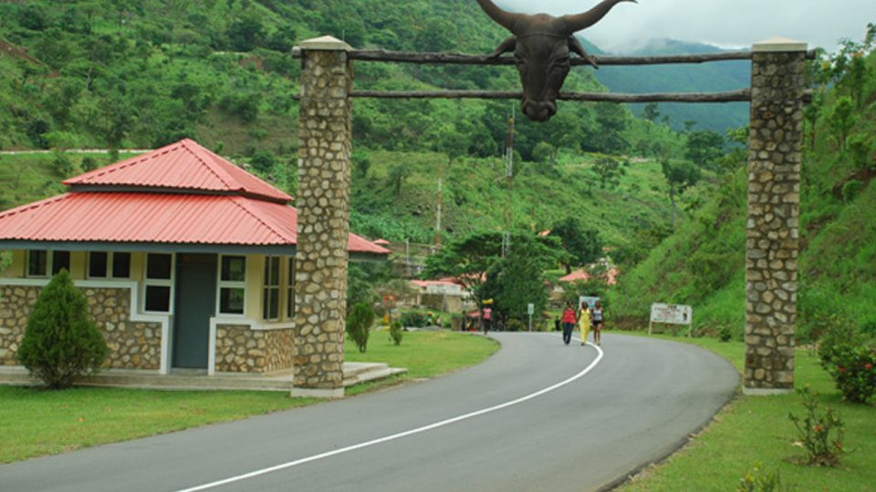
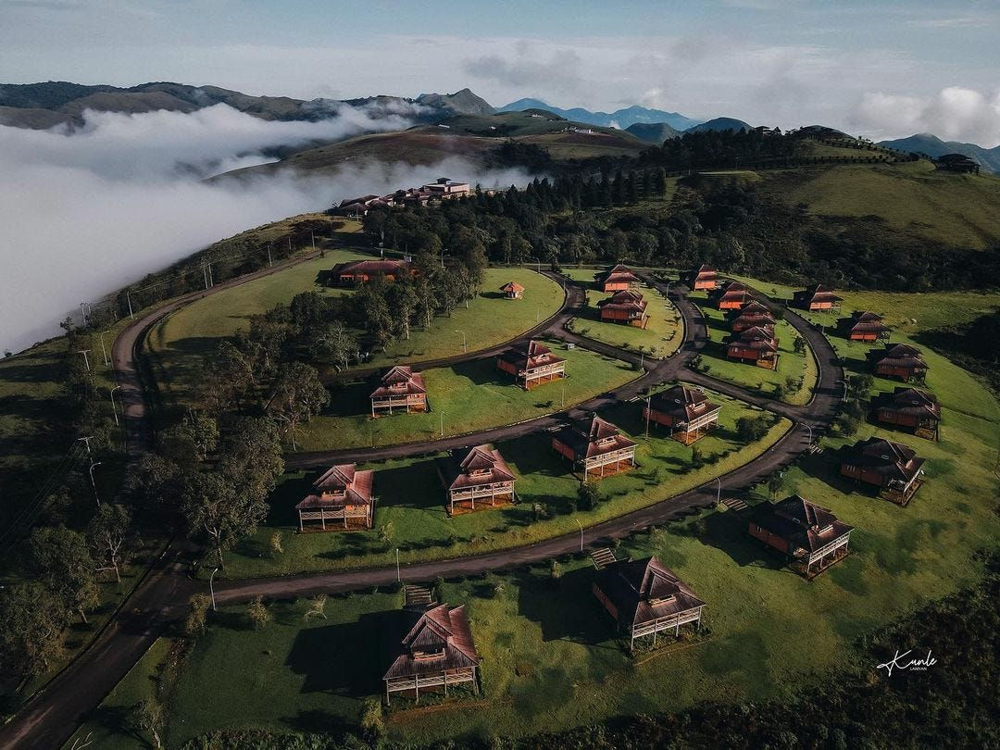
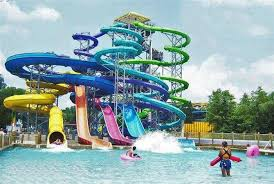
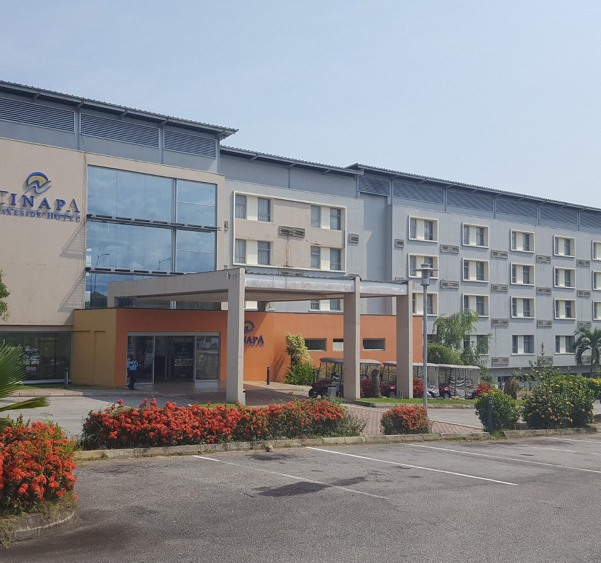

Introduction
Cross River State, located in the southeastern region of Nigeria, is renowned for its rich cultural heritage, stunning landscapes, and vibrant communities. The state capital, Calabar, is a bustling city known for its historical significance and modern amenities. Cross River is a popular destination for both domestic and international tourists, offering a blend of natural beauty, wildlife, and cultural experiences. From pristine beaches to lush rainforests, Cross River provides a diverse range of attractions that cater to all kinds of travelers.
Geography and Climate
Situated along the Atlantic coast, Cross River State is characterized by its tropical climate, with high humidity and substantial rainfall throughout the year. The state is home to the Cross River National Park, one of the most biodiverse regions in Africa, featuring dense rainforests, rivers, and waterfalls. The landscape includes coastal plains, mangroves, and mountainous areas, providing a variety of ecosystems and habitats for wildlife. The climate is generally warm and humid, with temperatures ranging from 24°C to 32°C.
Culture and People
Cross River State is a cultural melting pot, with over 50 ethnic groups residing within its borders. The Efik, Bekwarra, and Ejagham are among the prominent ethnic communities, each contributing to the state's rich cultural tapestry. The people of Cross River are known for their vibrant festivals, traditional dances, and colorful attire. The annual Calabar Carnival, often referred to as "Africa’s Biggest Street Party," is a highlight of the cultural calendar, attracting visitors from around the world to experience its lively parades, music, and performances.
Economic Activities
The economy of Cross River State is diverse, with significant contributions from agriculture, tourism, and manufacturing. The state is a major producer of crops such as cocoa, rubber, and palm oil. The tourism sector is a key economic driver, supported by attractions like Obudu Cattle Ranch, Tinapa Resort, and the Cross River National Park. Additionally, the state hosts various industries, including food processing, textiles, and construction, contributing to its economic growth and development.
Tourist Attractions
Cross River State boasts a wide array of tourist attractions that showcase its natural beauty and cultural heritage. The Obudu Cattle Ranch is a premier destination for nature lovers, offering picturesque landscapes, hiking trails, and a cable car with breathtaking views. Tinapa Resort provides a modern entertainment and business hub, featuring shopping, leisure activities, and a convention center. The Cross River National Park is a haven for wildlife enthusiasts, home to diverse species such as chimpanzees, forest elephants, and over 700 species of birds. Other notable attractions include the Margaret Thatcher Park, the Calabar Museum, and the beautiful beaches along the Atlantic coast.
Education and Innovation
Cross River State is home to several reputable educational institutions, including the University of Calabar, Cross River University of Technology, and the Nigerian Institute of Journalism. These institutions foster a spirit of learning and innovation, contributing to the state's development in various fields. The state's focus on education is complemented by research centers and initiatives aimed at promoting technological advancements and sustainable development practices.
Obudu Cattle Ranch
 Obudu Cattle Ranch, also known as Obudu Mountain Resort, is one of the most famous tourist destinations in Cross River State. Nestled on the Obudu Plateau, the ranch offers stunning views, cool climate, and a variety of recreational activities. Visitors can enjoy hiking, rock climbing, and horseback riding, or simply relax in the serene environment. The ranch also features a cable car that provides panoramic views of the surrounding landscape, making it a must-visit location for nature enthusiasts and adventure seekers alike.
Tinapa Resort
 Tinapa Resort is a modern leisure and business hub located in Calabar. It offers a wide range of facilities, including a shopping mall, movie theaters, restaurants, and a convention center. The resort is designed to cater to both tourists and business travelers, providing a comfortable and convenient environment for relaxation and entertainment. Tinapa Resort is also known for hosting various events, exhibitions, and conferences, making it a key destination for both leisure and professional activities.
Conclusion
Cross River State is a vibrant and diverse region that offers an abundance of experiences for travelers. From its rich cultural heritage and lively festivals to its breathtaking natural landscapes and modern amenities, Cross River has something for everyone. Whether you're seeking adventure, relaxation, or a cultural immersion, Cross River State is a destination worth exploring.